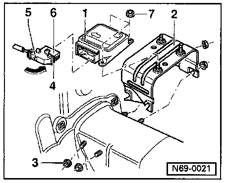
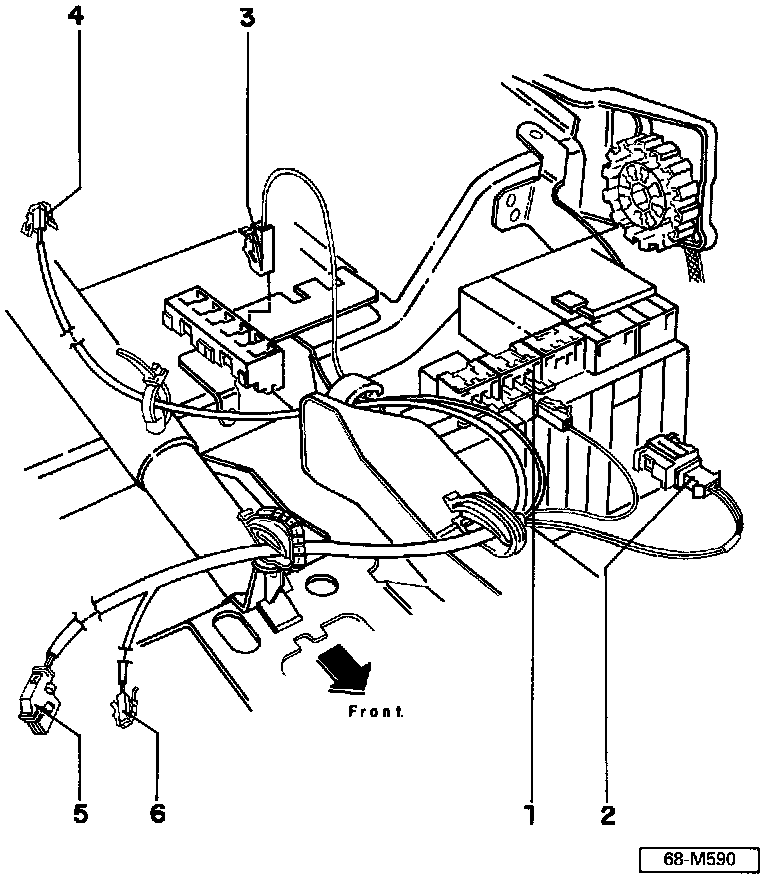

Removal and Installation
From 09.94
^ Siemens control module: Part No. 6NO 909 603 D
^ Mounting bracket (Bauer): Part No. 1HO 959 657 B

- Press locking tab -5-, swing connector lock -4- to position shown (arrow), and disconnect harness connector -6- from airbag control module -1-.
- Remove nuts -3- and remove control module -1- with bracket from mounting studs.
^ Tightening torque (nuts -3-): 20 Nm (15 ft lb)
- Remove nuts -7. and remove control module -1- from bracket.
^ Tightening torque (nuts -7-): 9 Nm (80 in lb)
Installation
- Installation is the reverse order of removal.
CAUTION:
^ From 11.94, the control module wiring harness (Part No. 1HO 971 581 B) has been changed to eliminate the brown ground wire.
^ The Temic control module needs the ground wire-the Siemens control module does not.
^ Only the Siemens control module and the wiring harness without the ground wire will be supplied as replacement parts. Both wiring harnesses, with and without the ground wire, carry the same part number
^ If a Siemens control module is installed in a vehicle equipped with the Temic control module, the wiring harness will NOT have to be replaced.
^ Part numbers are listed for reference only. Always check with your Parts department for the latest information.

Wiring harness for Temic airbag control module, up to 11.94
1 - Central Ground connection
2 - Ground connector
^ Brown
^ Discontinued after 11.94
3 - Harness connector
4 - Airbag Malfunction Indicator Lamp (MIL) connector
5 - Diagnostic connector
^ Red
6 - Airbag harness connector, drivers side
7 - Harness connector
^ For airbag control module
8 - Airbag harness connector, passenger side
NOTE: The Temic airbag control module and this wiring harness are no longer avail able as replacement parts.

Wiring harness for Siemens airbag control module without ground wire (brown), from 11.94
1 - Harness connector
2 - Airbag Malfunction Indicator Lamp (MIL) connector
3 - Diagnostic connector
^ Red
4 - Airbag harness connector, driver's side
5 - Harness connector
^ For airbag control module
6 - Airbag harness connector, passenger side
NOTE: The Siemens airbag control module and this wiring harness are the only ones available as replacement parts.